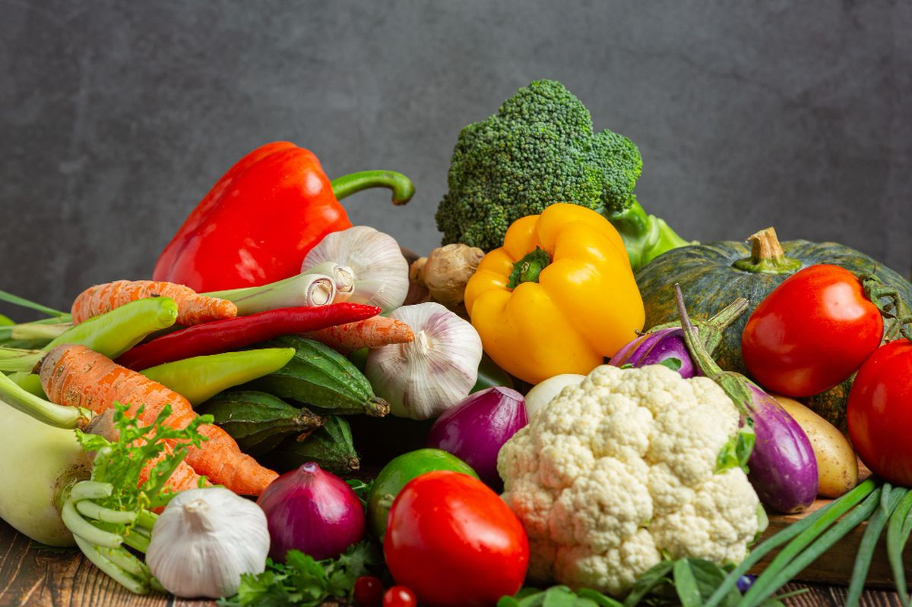

Sayuran yang Kaya Zat Besi untuk Perkembangan Anak
Beberapa jenis sayuran dan buah dapat membantu memenuhi kebutuhan zat besi harian anak.
Berikut pilihan yang dapat dikonsumsi secara rutin:
1.Bayam
Dalam setiap 100 gram bayam terkandung sekitar 1,05 mg zat besi, mencukupi hingga 15% kebutuhan zat besi harian untuk anak usia 1–5 tahun. Bayam juga kaya akan vitamin A dan C yang dapat meningkatkan penyerapan zat besi oleh tubuh.
2. Kangkung
Kangkung segar mengandung sekitar 2,3 mg zat besi per 100 gram. Jumlah ini mencakup sekitar 30% kebutuhan harian anak usia 1–3 tahun dan 21% untuk anak usia 4–6 tahun. Untuk menjaga nutrisinya, kangkung sebaiknya dimasak dengan sedikit minyak, seperti ditumis ringan.
3. Sawi
Setiap 100 gram sawi mengandung sekitar 2,9 mg zat besi, yang setara dengan 41% kebutuhan harian anak usia 1–3 tahun, serta 29% untuk usia 4–6 tahun. Sawi bisa diolah menjadi sup atau ditumis singkat agar kandungan gizinya tetap terjaga.
4. Brokoli
Brokoli mengandung sekitar 0,73 mg zat besi per 100 gram, memenuhi sekitar 10% dari kebutuhan harian anak usia 1–3 tahun. Sayuran ini juga merupakan sumber serat yang baik untuk mendukung kesehatan saluran cerna.
5. Kacang Kedelai
Dalam 100 gram kacang kedelai terkandung sekitar 6,9 mg zat besi, yang dapat mencukupi hingga 92% kebutuhan zat besi anak usia 1–3 tahun. Selain itu, kedelai juga kaya protein nabati yang berperan penting dalam pertumbuhan otot dan jaringan tubuh anak.